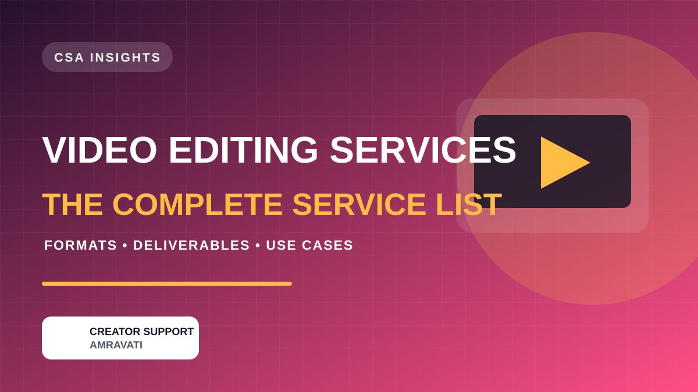

Video Editing Agency Near Me: How to Evaluate Local Studios & Editing Partners
Typing “video editing agency near me” into Google is usually the first move when you have raw footage sitting on a memory card—or an upcoming shoot—and need a reliable partner to turn it into a finished video. Proximity makes face-to-face meetings and hard-drive handoffs easy, but being nearby does not automatically make an editor the right fit for your format.
In most cities, search results can mix wedding video cutters, event operators, solo freelancers and commercial post-production studios under similar labels. The goal is not to judge one type of provider as better than another; it is to identify who has the workflow and experience your project actually needs.
1. Separate Shooting Needs From Editing-Only Needs
Before visiting any local studio, decide whether your project needs cameras on location or post-production on existing footage:
- When Local Proximity Genuinely Matters: You need studio recording (such as a video podcast or talking-head batch), on-site interviews, product filming, physical drive handoffs for large camera originals, or live event coverage where a crew must travel to your venue.
- When Location Is Secondary: You already record clips on a phone or camera and need cutting, captions, audio cleanup, colour grading or thumbnails. In that case, compare local editors alongside specialised remote post-production teams.
Write down the work that must happen in person. This prevents paying for a nearby studio when you only need editing—or choosing a remote editor when your project depends on an on-site crew.
2. How to Filter Local Search Results Beyond Map Ratings
A Google Business Profile and a few star ratings may help confirm that a business exists, but they do not prove that it can handle your format. Look for evidence before making a shortlist:
- Check Format Specialisation: Editing a long wedding film requires different pacing and storytelling from a 45-second Instagram Reel, a multicamera podcast or a B2B explainer. Look for recent samples in your exact category.
- Inspect Full Samples on Your Phone: Check whether text and subtitles remain readable, dialogue is free of distracting echo, skin tones look natural and cuts feel purposeful rather than overloaded with effects.
- Verify Who Actually Does the Work: Ask who will edit your video, who handles feedback and whether the work is outsourced. Outsourcing is not automatically a problem; unclear responsibility and quality control are.
- Look for Repeatable Process: A commercial or creator-focused workflow should be able to explain briefing, file organisation, draft review, revisions and final exports—not just show a montage.
3. Compare Local Studio Visits vs. Hybrid Cloud Workflows
Depending on file sizes and your schedule, you can work with a nearby editing studio in two practical ways:
| Workflow Option | How It Works | Best For |
|---|---|---|
| In-Studio / Drive Handoff | You bring SD cards or SSDs to the studio, discuss the brief in person and review drafts at the desk or through a review link | Large multicamera footage, podcast studio sessions or first-time projects needing close alignment |
| Hybrid Local + Cloud Workflow | You shoot locally or hand over footage once, then receive rough cuts, leave timestamped notes and download final masters online | Weekly YouTube videos, coaching lectures or monthly Reels batches without repeated travel |
| Fully Remote Post-Production | You upload organised source files, brand assets and a written brief; the editor shares review versions and final exports online | Phone-shot content, creator videos and projects where physical studio access is unnecessary |
For a hard-drive handoff, label the drive, agree on who is responsible for it and keep your own untouched backup. For cloud work, check upload limits, access permissions, transfer time and how the editor will handle large originals or proxy files.
4. What to Bring to Your First Studio Meeting or Discovery Call
Walking into an editing studio—or joining a call—with organised inputs saves days of back-and-forth:
- A Clean Backup of Your Footage: Keep an untouched copy of original camera cards on your own drive before handing over media. Do not make the studio the only holder of your recordings.
- 2–3 Reference Videos: Share examples whose pacing, caption style or tone matches what you want. Mention what you dislike too, so the brief is specific.
- Brand Assets & Exact Spellings: Bring logo files, brand colours, fonts and written spellings of speaker names, designations, prices or contact details.
- Target Outputs & Deadlines: List every platform and required format—
16:9horizontal for YouTube or a website,9:16vertical for Reels or Shorts—and confirm realistic draft and final dates in writing. - Project Context: Explain the audience, purpose, key message and what viewers should do after watching. A technically clear brief is more useful than simply saying “make it professional”.
5. Questions to Ask Before Locking a Local Editing Partner
Before paying an advance or leaving your footage, get clear answers on these operational basics:
- What is included in the quoted scope? Confirm whether audio cleanup, subtitles, music licensing, thumbnail or cover design and colour correction are part of the base price or billed separately.
- How many revision rounds are included? Clarify how minor fixes, such as text typos or trimming a pause, are handled versus structural re-edits or a changed brief.
- How long are raw files and project files stored? Ask how long backups are kept after final delivery, whether editable project files are retained and whether they can be supplied on request.
- What is the realistic turnaround time? Same-day or next-day delivery depends on active workload and project complexity. Never assume rush turnaround without written confirmation.
- How is confidentiality handled? If footage includes clients, students, employees, unreleased products or private locations, agree who can access the files and how they will be stored and deleted.
6. Local Production in Tier-2 and Tier-3 Cities: Practical Trade-Offs
In cities such as Amravati and other tier-2 or tier-3 markets, one provider may offer filming, editing, photography and event coverage, while another may specialise in only one stage. A broad service list can be convenient, but ask to see relevant examples and identify the person responsible for each part of the job.
Local production can reduce travel coordination, make location checks easier and help when speakers or products must be filmed in person. However, specialist editing skills or additional capacity may be available remotely. A practical model is often to record with a trusted local camera operator and use a dedicated editor for post-production, with one coordinator managing the handoff.
Choose based on the quality of the relevant work, clarity of the process, communication and total project cost—not on city size or assumptions about what a local provider can or cannot do.
Frequently Asked Questions
Is a local editing studio better than hiring a remote freelancer?
A local studio is convenient when you need in-person briefing, studio recording or physical drive handoffs. A remote freelancer or team can work well when your footage is already digital and you are comfortable sharing files and timestamped feedback online.
Can a local studio edit videos shot on a smartphone?
Yes. Smartphone footage can be suitable when clips have clear audio, steady framing and adequate lighting. Share original video files through a drive, cable or suitable cloud transfer rather than compressed messaging-app forwards where possible.
How can I test a nearby video editor before committing to a big project?
Start with a single scoped video or a small pilot batch, such as one YouTube edit or two to three Reels. A paid test can show communication speed, attention to spelling and audio, editing judgement and adherence to deadlines.
What should I check before handing over an SSD or memory card?
Keep a verified backup, label the media, list the contents and agree on a handover record. Confirm when the drive will be returned and who is responsible if media is lost or damaged.
Key Takeaway
Searching “near me” is a smart starting point, but the right video editing partner is chosen on relevant format experience, clean audio-visual standards, transparent scope and reliable turnaround. Separate filming needs from editing needs, review full samples on a phone screen, protect your original footage and start with a clearly defined brief.
If you are looking for video editing, podcast recording or on-location production in Amravati—or coordinating remote post-production—Creator Support Amravati is based in Mahendra Colony, Amravati, and supports creators, educators and businesses across Maharashtra and remotely, subject to project scope and availability. Explore our video editing services and creative services, or contact CSA to discuss your project.
Prepare for Your First Editing Consultation
Share your video format, footage size, whether filming is required, target platforms and preferred deadline. This helps establish whether an in-person, hybrid or remote workflow is the practical fit.